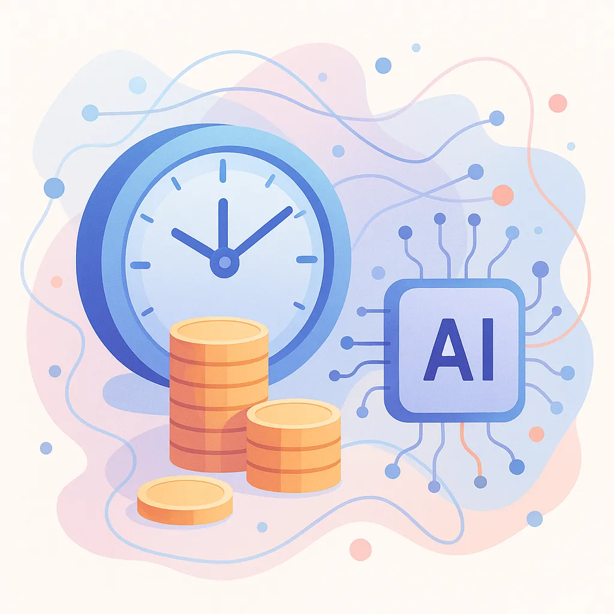

How AI Saves Time and Money for Businesses
By Onbrd Solutions • Updated 1 September 2025 • 6 min read
TL;DR:
- AI adoption among small businesses is widespread, with around 75 % already using AI tools to automate tasks【193838261752748†L90-L166】.
- Surveyed companies report that AI frees up time and significantly reduces costs: 76 % say it lets them focus on higher‑value work and 93 % consider AI cost‑effective【193838261752748†L90-L166】.
- AI tools have saved an estimated 6.33 billion hours of labour and $273.5 billion in annual savings【193838261752748†L90-L166】.
- Practical examples show that automating customer support, scheduling and paperwork can reclaim tens of hours per week and cut overhead.
Why time and money savings matter
Time and capital are precious for any business. Hiring, onboarding and managing staff adds overhead, and mundane tasks quickly consume the workday. Artificial intelligence can help by automating routine workflows — answering customer questions, booking appointments, summarising messages and more — so your team can focus on strategic projects. These efficiencies directly translate to savings and improved service.
The data behind AI’s impact
Recent research highlights how widely AI has been adopted and the scale of its benefits. A survey of small businesses found that three‑quarters of respondents are already using AI tools, and the majority report meaningful efficiency gains【193838261752748†L90-L166】. Seventy‑six percent say AI frees up time for higher‑value work, while ninety‑three percent consider the tools cost‑effective【193838261752748†L90-L166】.
These improvements add up. The same study estimates that AI saved businesses 6.33 billion hours of labour in a single year — equivalent to $273.5 billion in productivity【193838261752748†L90-L166】. Nearly half of surveyed companies adopted AI within the past year, showing how quickly these technologies are becoming mainstream【193838261752748†L90-L166】.
Stories from the field
Numbers tell part of the story; anecdotes illustrate what’s possible. Here are a few examples of how businesses use AI to reclaim hours and reduce costs:
- Appointment scheduling: A dental clinic that implemented an AI phone bot to handle appointment bookings and reminders reduced staff scheduling time by several hours each week and cut no‑show rates.
- Customer support: An online retailer deployed a chat bot that answers common questions and processes returns. The bot resolved 60 % of inquiries autonomously, enabling the customer service team to focus on complex cases.
- Documentation: A small accounting firm uses AI to summarise meeting transcripts and draft proposals. This automation saves hours of manual note‑taking and reduces administrative overhead.
While experiences vary, these stories echo the broader trend: automating repetitive tasks frees employees to tackle higher‑impact work, improving both the bottom line and job satisfaction.
Key takeaways
Artificial intelligence is no longer a futuristic concept; it’s an essential tool that makes businesses more efficient. With most small businesses already adopting AI and reporting significant time and cost savings【193838261752748†L90-L166】, the question isn’t whether to embrace automation but how soon you can start. By deploying AI strategically — in customer support, scheduling, data entry and beyond — you can reclaim hours each week and improve your margins.